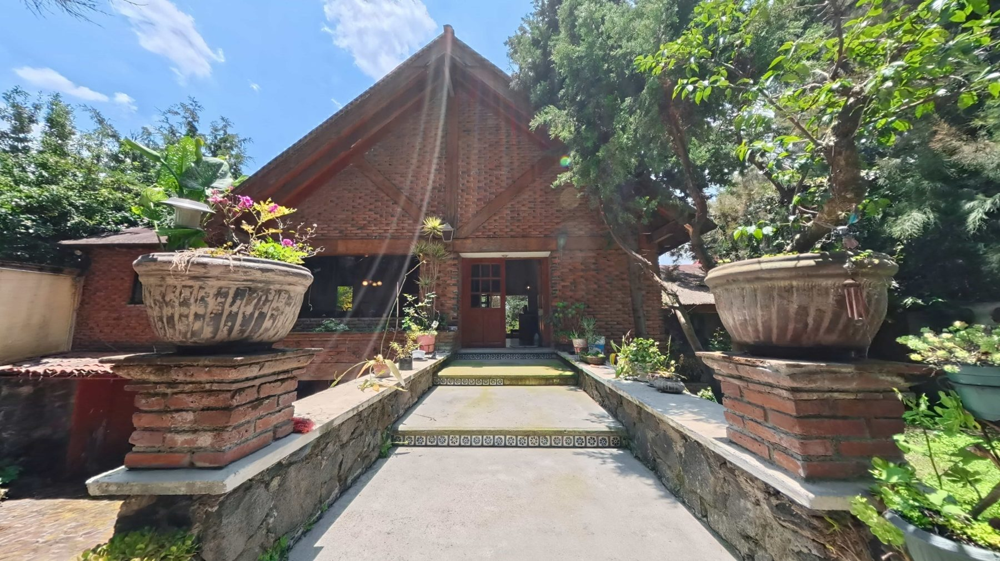

Estancia
Amplia sala y comedor con pisos laminados, iluminación LED empotrada y plafones con luz indirecta.

Magdalena Petlacalco · Tlalpan · CDMX
$3,950,000 MXN
Estrena un departamento lleno de luz natural, con acabados contemporáneos y una distribución funcional pensada para disfrutar cada espacio.
Ubicado en Jardines de Atizapán, combina tranquilidad residencial, seguridad y conexión inmediata con vialidades, escuelas, comercios, restaurantes y servicios.
Amplia sala y comedor con pisos laminados, iluminación LED empotrada y plafones con luz indirecta.
Equipada con estufa, campana extractora y cubiertas de granito oscuro, conectada con el área de lavado.
Tres habitaciones con clósets integrados de piso a techo y excelente aprovechamiento del espacio.
Dos baños completos con cancelería de cristal templado y acabados contemporáneos.
Explora los espacios interiores de este departamento en Jardines de Atizapán.


Explora cada espacio de manera interactiva y conoce la distribución del departamento antes de agendar tu visita.
Iniciar recorrido 360°
C. Jacarandas 8
Jardines de Atizapán
52978 Cd. López Mateos, Estado de México
Con acceso inmediato a Blvd. Adolfo López Mateos y conexión rápida hacia Las Alamedas, escuelas, centros comerciales, restaurantes y servicios.
Consulta la ficha visual de este departamento y descubre sus características principales, experiencia digital, recorrido 360°, galería y datos de contacto.
Ver Property Passport